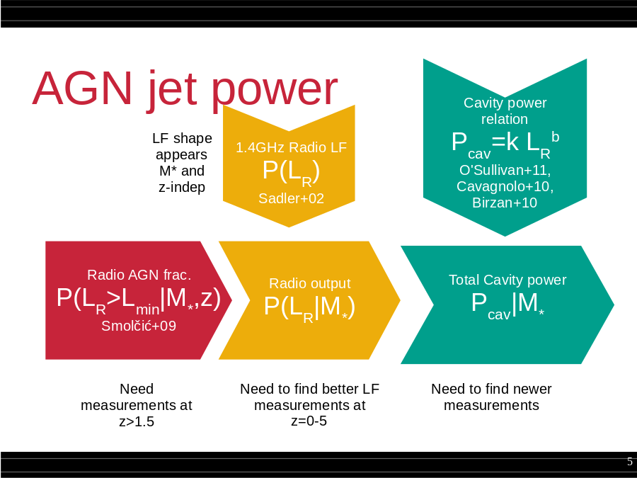

Lmin|M*,z)
Smolčić+09
Need measurements at z>1.5
Need to find better LF measurements at z=0-5
Need to find newer measurements
Cavity power relation
Pcav=k LRb
O'Sullivan+11,
Cavagnolo+10,
Birzan+10
1.4GHz Radio LF
P(LR)
Sadler+02
Radio output
P(LR|M*)
Total Cavity power
Pcav|M*
LF shape appears M* and z-indep">